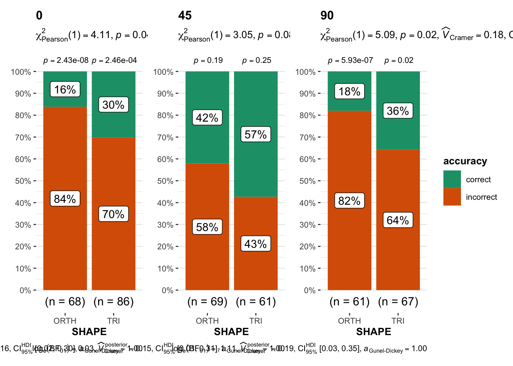

The purpose of this notebook is test the hypotheses that determined the design of the SGC4C study.
CODE
#UTILITIESlibrary(Hmisc) # %nin% operatorlibrary(broom) #tidy model outputlibrary(broom.mixed) #tidy mixed modelslibrary(mosaic) #favstatslibrary(svglite) #saving plots as svglibrary(distributional)#VISUALIZATION# library(ggpubr) #arrange plots# library(cowplot) #arrange shift function plotslibrary(ggformula) #easy graphslibrary(scales) # # library(vcd) #mosaic plots# # library(vcdExtra) #mosaic plotslibrary(kableExtra) #printing tableslibrary(sjPlot) #visualize model coefficientslibrary(ggdist) #uncertainty vizlibrary(modelr) #needed for ggdistlibrary(gghalves) # plots. in halflibrary(ggbeeswarm) # violin plot stuffslibrary(statsExpressions)library(ggstatsplot) #plots with statslibrary(modelsummary) #latex tables for models!library(cowplot) #arrange plots#MODELLING# library(rstatix) #helpful testing functions incl wilcoxon, etclibrary(report) #easystats reportinglibrary(see) #easystats visualizationlibrary(performance) #easystats model diagnosticslibrary(parameters) #easystats model summary and vislibrary(marginaleffects) #contrasts on brms multinomials # library(qqplotr) #confint on qq plot# library(gmodels) #contingency table and CHISQR# library(equatiomatic) #extract model equation# library(pscl) #zeroinfl / hurdle models library(lme4) #mixed effects modelslibrary(lmerTest) #for CIs in glmerlibrary(merTools) #predictIntervallibrary(emmeans) #estimated marginal effects and posthocs on interactions# library(ggeffects) #visualization log regr models#MULTINOMIAL library(nnet) #multinomial logistic regression [not mixed] #no p valueslibrary(mclogit) #frequentist mixed multinomial logistic regression [mblogit] #gives p values#BAYESIANlibrary(cmdstanr) #executing stanlibrary(brms) #bayesian mixed multinomials [+ other bayesian reg models]library(bayestestR) library(tidybayes)library(posterior)library(tidyverse) #ALL THE THINGS#OUTPUT OPTIONSlibrary(dplyr, warn.conflicts =FALSE)options(dplyr.summarise.inform =FALSE)options(ggplot2.summarise.inform =FALSE)options(scipen=1, digits=3)#GRAPH THEMEING# theme_set(theme_minimal()) # Custom ggplot theme to make pretty plots# Get the font at https://fonts.google.com/specimen/Barlow+Semi+Condensedtheme_clean <-function() {theme_minimal(base_family ="Barlow Semi Condensed") +theme(panel.grid.minor =element_blank(),plot.title =element_text(family ="BarlowSemiCondensed-Bold"),axis.title =element_text(family ="BarlowSemiCondensed-Medium"),strip.text =element_text(family ="BarlowSemiCondensed-Bold",size =rel(1), hjust =0),strip.background =element_rect(fill ="grey80", color =NA))}set_theme(base =theme_clean())##IMPORT CUSTOM COLOR PALETTESsource("analysis/utils/foxy_palettes.R")
CODE
set.seed(12345)
In SGC4C we set out to answer the following question: Does ROTATING the TM graph improve performance on the interval graph comprehension task? We test this hypothesis on both the orthogonal and triangular axes versions of the graph.
Data was collected (online, via PROLIFIC) in Summer 2022. Data from the rotation (45, 90) conditions were joined with previously collected (online) data for for non-rotation conditions.
CODE
title ="Participants by Condition and Data Collection Period"cols =c("Condition","Total for Period")cont <-table(df_subjects$pretty_condition)cont %>%addmargins() %>%kbl(caption = title, col.names = cols ) %>%kable_classic()
Participants by Condition and Data Collection Period
Condition
Total for Period
ORTH-0
68
TRI-0
86
ORTH-45
69
TRI-45
61
ORTH-90
61
TRI-90
67
Sum
412
Participants
CODE
#Describe participantssubject.stats <-df_subjects %>% dplyr::select(age) %>%unlist() %>%favstats()subject.stats$percent.male <- ((df_subjects %>%filter(gender=="Male") %>%count())/count(df_subjects))$nsubject.stats$percent.female <- ((df_subjects %>%filter(gender=="Female") %>%count())/count(df_subjects))$nsubject.stats$percent.other <- ((df_subjects %>%filter(gender %nin%c("Female","Male")) %>%count())/count(df_subjects))$ntitle ="Descriptive Statistics of Participant Age and Gender"subject.stats %>%kbl (caption = title) %>%kable_classic()%>%footnote(general ="Age in Years", general_title ="Note: ",footnote_as_chunk = T)
Descriptive Statistics of Participant Age and Gender
min
Q1
median
Q3
max
mean
sd
n
missing
percent.male
percent.female
percent.other
18
20
24
37
79
30.3
13.9
412
0
0.408
0.563
0.029
Note: Age in Years
TODO
Overall 412 participants (41 % male, 56 % female, 3 % other) undergraduate STEM majors at a public American University participated in exchange for course credit (age: 18 - 79 years).
#:::::::: LABELLED # # temp <- df_i %>% mutate(# accuracy = fct_rev(accuracy)# ) # # #CREATE PLOT WITH LABELS# p <- grouped_ggbarstats(data = temp, x = accuracy, y = pretty_condition,# grouping.var = ospan_split,# results.subtitle = FALSE,# ggplot.component = ## modify further with `{ggplot2}` functions# list(# scale_fill_manual(values = paletteer::paletteer_d("lisa::FridaKahlo", 2))# # theme(axis.text.x = element_text(angle = 90)))# )) + theme_clean() # # #FIX LABELS# p1 <- p[[1]] + labs(# subtitle = "Impasse is particularly effective for subjects with high-working memory",# x = "Condition", y = "Probability of Response"# ) + theme_clean() + theme(legend.position = "blank") # # p2 <- p[[2]] + labs(# x = "Condition", y = "Probability of Response",# subtitle = " "# ) + theme_clean() + theme(legend.position = "blank") +# ggeasy::easy_remove_axes(which="y", what=c("text","title"))# # ggeasy::easy_remove_axes(which="y", what= ""))# # #CREATE ROW# # plot_row <- plot_grid(p1,p2, rel_widths = c(1,0.85))# # title <- ggdraw() + # draw_label(# "DISTRIBUTION | Question Accuracy",# fontface = 'bold',# x = 0,# hjust = 0# ) +# theme(# # add margin on the left of the drawing canvas,# # so title is aligned with left edge of first plot# plot.margin = margin(0, 0, 0, 7)# )# # # pg <- plot_grid(# title,# plot_row,# ncol = 1,# # rel_heights values control vertical title margins# rel_heights = c(0.1, 1)# ) + theme_clean()# # pg# ggsave(pg, filename = "figures/SGC4C_OSPAN_Accuracy.png", width = 6, height =4)
Describe
CODE
title ="Descriptive Statistics of Response Accuracy (Total % Correct)"tbl1 <- mosaic::favstats(~task_percent, data = df_s) tbl1 %>%kbl (caption = title) %>%kable_classic()
Descriptive Statistics of Response Accuracy (Total % Correct)
min
Q1
median
Q3
max
mean
sd
n
missing
0
0
0.154
0.692
1
0.33
0.368
412
0
CODE
title ="Descriptive Statistics of Response Accuracy (Total % Correct) BY CONDITION"tbl2 <- mosaic::favstats(task_percent ~ pretty_condition, data = df_s) tbl2 %>%kbl (caption = title) %>%kable_classic()
Descriptive Statistics of Response Accuracy (Total % Correct) BY CONDITION
pretty_condition
min
Q1
median
Q3
max
mean
sd
n
missing
ORTH-0
0
0.000
0.000
0.154
1
0.163
0.315
68
0
TRI-0
0
0.000
0.077
0.596
1
0.257
0.355
86
0
ORTH-45
0
0.231
0.538
0.846
1
0.507
0.348
69
0
TRI-45
0
0.462
0.692
0.846
1
0.644
0.297
61
0
ORTH-90
0
0.000
0.000
0.154
1
0.173
0.298
61
0
TRI-90
0
0.000
0.077
0.500
1
0.266
0.327
67
0
TODO
Across both conditions, overall accuracy on the task ranges from 0 to 100 with a mean of 32.972.
Task level accuracy on the graph comprehension task follows the same pattern of behaviour observed in Study 4C: the distribution is bimodal. Total scores were higher in the impasse condition (M = 35%, SD = 41%, n = 65) than control condition (M = 15%, SD = 30%, n = 68), implying a likely main effect of scaffold condition. Comparing total scores across the median split on the OSPAN task (high working memory (vs) low working memory), we see readers with high working memory (M = 31 %, SD = 41%, n = 66) performed better than readers with low working memory (M = 19 %, SD = 31%, n = 67). In Figure \(\ref{fig_3C_ospan_raw_accuracy}\) we see that while readers in the impasse condition performed consistently better than those in the control condition, the effect is particularly pronounced for readers with high-working memory, implying a potential interaction between condition and working memory.
TESTS
Aligned Ranks Transformation
CODE
library(ARTool)m.art =art(task_percent ~ SHAPE*ROTATION, data = df_s)anova(m.art)
Analysis of Variance of Aligned Rank Transformed Data
Table Type: Anova Table (Type III tests)
Model: No Repeated Measures (lm)
Response: art(task_percent)
Df Df.res F value Pr(>F)
1 SHAPE 1 406 4.0864 0.04 *
2 ROTATION 2 406 57.6235 <2e-16 ***
3 SHAPE:ROTATION 2 406 3.7072 0.03 *
---
Signif. codes: 0 '***' 0.001 '**' 0.01 '*' 0.05 '.' 0.1 ' ' 1
Kruskal-Wallis rank sum test
data: df_s$task_percent by df_s$pretty_condition
Kruskal-Wallis chi-squared = 95, df = 5, p-value <2e-16
Visualize
CODE
#:::::::: STATSPLOT | VIOLINgrouped_ggbetweenstats(y = task_percent, x = SHAPE, grouping.var = ROTATION, data = df_s, type ="nonparametric")
CODE
grouped_ggbetweenstats(y = task_percent, x = ROTATION, grouping.var = SHAPE, data = df_s, type ="nonparametric")
MIXED LOGISTIC REGRESSION
Fit a mixed logistic regression (at the item level), predicting accuracy (absolute score) on all discriminating questions by condition; accounting for random effects of subject and item.
To explore the effect of working memory capacity on ACCURACY, we fit a mixed effects logistic regression model with random intercepts for subjects and questions, with SHAPE AND ROTATION as fixed effects A likelihood ratio test indicates that a model including these main effects explains significantly more variance in the data than an intercepts-only baseline model (\(\chi^2 (3,6) = 105.93, p < 0.001\)). We also fit a model including an interaction term between SHAPE and ROTATION, however a likelihood ratio test indicated that adding the interaction term did not improve model fit (\(\chi^2 (6,8) = 0.18, p = 0.91\)) Therefore we chose the simple main effects model (with random intercepts) as the final model.
The explanatory power of the entire model is substantial (\(conditional \ R^2 = 0.80\)) and the part related to the fixed effects SHAPE and ROTATION (\(marginal \ R^2\)) explains 20% of variance.
Describe
CODE
# best modelm <- mm.R.S.rSQ #MAIN EFFECTS MODELm %>%write_rds(file ="analysis/SGC4C/models/sgc4c_glmer_acc_mm.R.S.rSQ.rds")#::::::::: PRINT MODEL print("PREDICTOR MODEL")
[1] "PREDICTOR MODEL"
CODE
summary(m)
Generalized linear mixed model fit by maximum likelihood (Laplace
Approximation) [glmerMod]
Family: binomial ( logit )
Formula: accuracy ~ ROTATION + SHAPE + (1 | subject) + (1 | q)
Data: df_i
AIC BIC logLik deviance df.resid
3867 3907 -1928 3855 5350
Scaled residuals:
Min 1Q Median 3Q Max
-4.947 -0.252 -0.100 0.281 4.443
Random effects:
Groups Name Variance Std.Dev.
subject (Intercept) 9.25 3.04
q (Intercept) 0.41 0.64
Number of obs: 5356, groups: subject, 412; q, 13
Fixed effects:
Estimate Std. Error z value Pr(>|z|)
(Intercept) -4.004 0.431 -9.29 <2e-16 ***
ROTATION45 3.900 0.435 8.97 <2e-16 ***
ROTATION90 0.504 0.436 1.16 0.248
SHAPETRI 1.145 0.349 3.28 0.001 **
---
Signif. codes: 0 '***' 0.001 '**' 0.01 '*' 0.05 '.' 0.1 ' ' 1
Correlation of Fixed Effects:
(Intr) ROTATION4 ROTATION9
ROTATION45 -0.629
ROTATION90 -0.517 0.497
SHAPETRI -0.511 0.124 0.040
Although Wald Chi-Square tests revealed significant main effects of both SHAPE (\(\chi^2 (1) = 10.8, p < 0.001\)) and ROTATION (\(\chi^2 (1) = 94.9, p < 0.001\)).
The model predicts that, for ORTHOGONAL shaped graphs, rotating the graph from 0 to 45 degrees increases the probability of a correct response from 1% to 47%. Further rotating the graph to 90 degrees however, results in a probability of only 3%. Posthoc comparisons indicate that the difference between 0 and 90 degree rotation is not significant (OR = 0.60, SE = 0.26 , p = 0.24)
The model predicts that, for TRIANGULAR shaped graphs, rotating the graph from 0 to 45 degrees increases the probability of a correct response from 5% to 74%. Further rotating the graph to 90 degrees however, results in a probability of only 9%. Posthoc comparisons indicate that the difference between 0 and 90 degree rotation is not significant (OR = 0.60, SE = 0.26 = 0.25).
Across both graph shapes, rotating the graph from 0 to 90 degrees results in a minor improvement in accuracy, while rotating the graph halfway between results in a substantial improvement in accuracy. Posthoc comparisons also reveal that across all levels of rotation, the triangular shape was significantly better than the orthogonal shape.
## | PLOT PREDICTIONS# #SJPLOT | MODEL | PROBABILITIES# plot_model(m, type="int",# show.intercept = TRUE,# show.values = TRUE,# title = "Model Prediction | Probability of Accurate Response",# axis.title = c("Condition","Probability of Accurate Response"))#PLOT MODEL PREDICTIONplot_model(m, type ="pred", terms =c("SHAPE", "ROTATION"))
CODE
plot_model(m, type ="eff", terms =c("SHAPE", "ROTATION"))
CODE
# ylim(0,1) + # labs(# title = "Model Prediction | Probability of Accurate Response",# subtitle = "Impasse increases Probability of Correct Response"# )#GGDIST | MODEL | PREDICTED PROBABILITIES# preds %>% # ggplot(aes( x = fit, y = ROTATION, fill = SHAPE)) + # stat_halfeye(alpha = 0.5, normalize = "panels") + # xlim(0,0.3) + theme_clean() + labs(# title = "Model PREDICTION | Probability of Accurate Response",# subtitle = "TODO check preds to see if fixed or includes random"# )
CODE
## PLOT INTERACTIONlibrary(ggeffects)
Attaching package: 'ggeffects'
The following object is masked from 'package:cowplot':
get_title
The following object is masked from 'package:modelr':
data_grid
orthogonal [reference category] includes orthogonal and satisficing responses ==> indicates a primarily orthogonal state of coordinate system understanding
other includes: blank, reference point, responses that cant be classified (including selecting all datapoints), => indicates an uncertain or unidentifiable state of coordinate system understanding, but one that is distinctly not orthogonal nor triangular
angular includes lines connecting responses as well as responses that include both orthogonal and triangular answers => indicates some degree of angular/triangular coordinate understanding
triangular includes correct triangular => indicates a correct triangular coordinate understanding
#:::::::: LABELLED # temp <- df_i %>% mutate(# state = fct_rev(state)# ) # # p <- grouped_ggbarstats(data = temp, x = state, y = pretty_condition,# grouping.var = ospan_split,# results.subtitle = FALSE,# ggplot.component = ## modify further with `{ggplot2}` functions# list(# scale_fill_manual(values = paletteer::paletteer_d("ggthemes::calc", 4))# # theme(axis.text.x = element_text(angle = 90)))# )) + theme_clean() + theme(legend.position = "bottom")# # p <- p + labs(title = "DISTRIBUTION | Question Accuracy",# y = "Proportion of Questions", x = "Condition",# subtitle = "Impasse condition yields more correct responses")# # p# # ggsave(p, filename = "figures/SGC4C_LAB_Accuracy.png", width = 6, height =4)#:::::::: LABELLED # # temp <- df_i # # %>% mutate(# # accuracy = fct_rev(accuracy)# # )# # #CREATE PLOT WITH LABELS# p <- grouped_ggbarstats(data = temp, x = state, y = pretty_condition,# grouping.var = ospan_split,# results.subtitle = FALSE,# ggplot.component = ## modify further with `{ggplot2}` functions# list(# scale_fill_manual(values = paletteer::paletteer_d("ggthemes::calc", 4))# # theme(axis.text.x = element_text(angle = 90)))# )) # # #FIX LABELS# p1 <- p[[1]] + labs(# subtitle = "Impasse is particularly effective for subjects with high-working memory",# x = "Condition", y = "Probability of Response"# ) + theme_clean() + theme(legend.position = "blank") # # p2 <- p[[2]] + labs(# x = "Condition", y = "Probability of Response",# subtitle = " "# ) + theme_clean() + theme(legend.position = "blank") +# ggeasy::easy_remove_axes(which="y", what=c("text","title"))# # ggeasy::easy_remove_axes(which="y", what= ""))# # #CREATE ROW# # plot_row <- plot_grid(p1,p2, rel_widths = c(1,0.85))# # title <- ggdraw() + # draw_label(# "DISTRIBUTION | Question Accuracy",# fontface = 'bold',# x = 0,# hjust = 0# ) +# theme(# # add margin on the left of the drawing canvas,# # so title is aligned with left edge of first plot# plot.margin = margin(0, 0, 0, 7)# )# # # pg <- plot_grid(# title,# plot_row,# ncol = 1,# # rel_heights values control vertical title margins# rel_heights = c(0.1, 1)# ) + theme_clean()# # # update_geom_defaults("text", list(colour = "grey20", family = theme_get()$text$family))# # # pg# ggsave(pg, filename = "figures/SGC4C_OSPAN_Accuracy.png", width = 6, height =4)
Describe
CODE
#::::::::::::DESCRIPTIVEStable(df_i$state, df_i$pretty_condition) %>%addmargins(2) %>%#display sum for rowprop.table(margin=2) %>%#return proportion (of column)addmargins(1) #sanity check sum of columns
(t <-table(df_i$state, df_i$ROTATION, df_i$SHAPE) %>%addmargins(2) %>%#display sum for rowaddmargins(1)) #sanity check sum of columns
, , = ORTH
0 45 90 Sum
orthogonal 587 204 412 1203
other 117 144 167 428
angular 36 94 77 207
triangular 144 455 137 736
Sum 884 897 793 2574
, , = TRI
0 45 90 Sum
orthogonal 623 72 324 1019
other 151 130 204 485
angular 57 80 111 248
triangular 287 511 232 1030
Sum 1118 793 871 2782
MIXED MULTINOMIAL REGRESSION
Does condition affect the response state of of items across the task?
Fit a MIXED logistic regression predicting interpretation state (k=3) by condition(k = 2).
Fit Model [brms]
CODE
##1. In order to set priors, first fit default priors model, then get prior description## in order to get class and dpar names # FLAT MODEL# flat <- brm( state ~ ROTATION+SHAPE + (1|subject) + (1|q),# data = df_i,# family = "categorical",# chains = 4, iter = 2000, warmup = 1000,# cores = 4, seed = 1234,# save_pars = save_pars(all = TRUE),# control = list(adapt_delta = 0.98), # to deal with divergent transitions# backend = "cmdstanr")# prior_summary(flat)inf_priors_maineffects <-c(#prior on INTERCEPTS #25% chance of each answer in control, scale = from 0.01 to 62%prior(normal(-1.1, 1.5), class ="Intercept", dpar ="muangular"),prior(normal(-1.1, 1.5), class ="Intercept", dpar ="muother"),prior(normal(-1.1, 1.5), class ="Intercept", dpar ="mutriangular"),#prior on COEFFICIENT#likely to change odds between 0 and 2.4#coefficient level rotation 45prior(normal(0, 2.42), class = b, coef="ROTATION45", dpar ="muangular"),prior(normal(0, 2.42), class = b, coef="ROTATION45", dpar ="muother"),prior(normal(0, 2.42), class = b, coef="ROTATION45", dpar ="mutriangular"),# coefficient level rotation 90prior(normal(0, 2.42), class = b, coef="ROTATION90", dpar ="muangular"),prior(normal(0, 2.42), class = b, coef="ROTATION90", dpar ="muother"),prior(normal(0, 2.42), class = b, coef="ROTATION90", dpar ="mutriangular"),#coeficient level shape triprior(normal(0, 2.42), class = b, coef="SHAPETRI", dpar ="muangular"),prior(normal(0, 2.42), class = b, coef="SHAPETRI", dpar ="muother"),prior(normal(0, 2.42), class = b, coef="SHAPETRI", dpar ="mutriangular"))inf_priors_ixn <-c(#prior on INTERCEPTS#25% chance of each answer in control, scale = from 0.01 to 62%prior(normal(-1.1, 1.5), class ="Intercept", dpar ="muangular"),prior(normal(-1.1, 1.5), class ="Intercept", dpar ="muother"),prior(normal(-1.1, 1.5), class ="Intercept", dpar ="mutriangular"),#prior on CONDITION COEFFICIENT#coefficient level rotation 45prior(normal(0, 2.42), class = b, coef="ROTATION45", dpar ="muangular"),prior(normal(0, 2.42), class = b, coef="ROTATION45", dpar ="muother"),prior(normal(0, 2.42), class = b, coef="ROTATION45", dpar ="mutriangular"),# coefficient level rotation 90prior(normal(0, 2.42), class = b, coef="ROTATION90", dpar ="muangular"),prior(normal(0, 2.42), class = b, coef="ROTATION90", dpar ="muother"),prior(normal(0, 2.42), class = b, coef="ROTATION90", dpar ="mutriangular"),#coeficient level shape triprior(normal(0, 2.42), class = b, coef="SHAPETRI", dpar ="muangular"),prior(normal(0, 2.42), class = b, coef="SHAPETRI", dpar ="muother"),prior(normal(0, 2.42), class = b, coef="SHAPETRI", dpar ="mutriangular"),#prior on IXN COEFFICIENT#likely to change odds between 0 and 2.4prior(normal(0, 2.42), class = b, coef="ROTATION45:SHAPETRI", dpar ="muangular"),prior(normal(0, 2.42), class = b, coef="ROTATION45:SHAPETRI", dpar ="muother"),prior(normal(0, 2.42), class = b, coef="ROTATION45:SHAPETRI", dpar ="mutriangular"),#prior on IXN COEFFICIENT#likely to change odds between 0 and 2.4prior(normal(0, 2.42), class = b, coef="ROTATION90:SHAPETRI", dpar ="muangular"),prior(normal(0, 2.42), class = b, coef="ROTATION90:SHAPETRI", dpar ="muother"),prior(normal(0, 2.42), class = b, coef="ROTATION90:SHAPETRI", dpar ="mutriangular"))#BAYESIAN RANDOM ONLYBmm.cat.rSQ <-brm( state ~1+ (1|subject) + (1|q), data = df_i, family ="categorical",chains =4, iter =2500, warmup =1000,cores =4, seed =1234,save_pars =save_pars(all =TRUE),# backend = "cmdstanr",file ="analysis/SGC4C/models/sgc4c_brms_state_Bmm.cat.rSQ.rds")# MAIN EFFECTSONLY MODELBmm.cat.R.SrSQ <-brm( state ~ ROTATION + SHAPE + (1|subject) + (1|q), data = df_i, prior = inf_priors_maineffects,family ="categorical",chains =4, iter =4000, warmup =1000,cores =4, seed =1234,save_pars =save_pars(all =TRUE),control =list(adapt_delta =0.98), # to deal with divergent transitionsbackend ="cmdstanr",file ="analysis/SGC4C/models/sgc4c_brms_state_Bmm.cat.R.S.rSQ.rds")##MODEL COMPARISON# print("MODEL COMPARISON: random effects (vs) CONDITION")(bf1 <-bayesfactor(Bmm.cat.rSQ, Bmm.cat.R.SrSQ))
Warning: Bayes factors might not be precise.
For precise Bayes factors, sampling at least 40,000 posterior samples is recommended.
Computation of Bayes factors: estimating marginal likelihood, please wait...
Warning: logml could not be estimated within maxiter, rerunning with adjusted starting value.
Estimate might be more variable than usual.
Recompiling the model with 'rstan'
Running /Library/Frameworks/R.framework/Resources/bin/R CMD SHLIB foo.c
clang -mmacosx-version-min=10.13 -I"/Library/Frameworks/R.framework/Resources/include" -DNDEBUG -I"/Library/Frameworks/R.framework/Versions/4.2/Resources/library/Rcpp/include/" -I"/Library/Frameworks/R.framework/Versions/4.2/Resources/library/RcppEigen/include/" -I"/Library/Frameworks/R.framework/Versions/4.2/Resources/library/RcppEigen/include/unsupported" -I"/Library/Frameworks/R.framework/Versions/4.2/Resources/library/BH/include" -I"/Library/Frameworks/R.framework/Versions/4.2/Resources/library/StanHeaders/include/src/" -I"/Library/Frameworks/R.framework/Versions/4.2/Resources/library/StanHeaders/include/" -I"/Library/Frameworks/R.framework/Versions/4.2/Resources/library/RcppParallel/include/" -I"/Library/Frameworks/R.framework/Versions/4.2/Resources/library/rstan/include" -DEIGEN_NO_DEBUG -DBOOST_DISABLE_ASSERTS -DBOOST_PENDING_INTEGER_LOG2_HPP -DSTAN_THREADS -DBOOST_NO_AUTO_PTR -include '/Library/Frameworks/R.framework/Versions/4.2/Resources/library/StanHeaders/include/stan/math/prim/mat/fun/Eigen.hpp' -D_REENTRANT -DRCPP_PARALLEL_USE_TBB=1 -I/usr/local/include -fPIC -Wall -g -O2 -c foo.c -o foo.o
In file included from <built-in>:1:
In file included from /Library/Frameworks/R.framework/Versions/4.2/Resources/library/StanHeaders/include/stan/math/prim/mat/fun/Eigen.hpp:13:
In file included from /Library/Frameworks/R.framework/Versions/4.2/Resources/library/RcppEigen/include/Eigen/Dense:1:
In file included from /Library/Frameworks/R.framework/Versions/4.2/Resources/library/RcppEigen/include/Eigen/Core:88:
/Library/Frameworks/R.framework/Versions/4.2/Resources/library/RcppEigen/include/Eigen/src/Core/util/Macros.h:628:1: error: unknown type name 'namespace'
namespace Eigen {
^
/Library/Frameworks/R.framework/Versions/4.2/Resources/library/RcppEigen/include/Eigen/src/Core/util/Macros.h:628:16: error: expected ';' after top level declarator
namespace Eigen {
^
;
In file included from <built-in>:1:
In file included from /Library/Frameworks/R.framework/Versions/4.2/Resources/library/StanHeaders/include/stan/math/prim/mat/fun/Eigen.hpp:13:
In file included from /Library/Frameworks/R.framework/Versions/4.2/Resources/library/RcppEigen/include/Eigen/Dense:1:
/Library/Frameworks/R.framework/Versions/4.2/Resources/library/RcppEigen/include/Eigen/Core:96:10: fatal error: 'complex' file not found
#include <complex>
^~~~~~~~~
3 errors generated.
make: *** [foo.o] Error 1
Recompilation done
Warning: logml could not be estimated within maxiter, rerunning with adjusted starting value.
Estimate might be more variable than usual.
Bayes Factors for Model Comparison
Model BF
[2] ROTATION + SHAPE + (1 | subject) + (1 | q) 2.96e+55
* Against Denominator: [1] 1 + (1 | subject) + (1 | q)
* Bayes Factor Type: marginal likelihoods (bridgesampling)
CODE
#substantial evidence in favor of conditon model over random only BF 1.64e+16# # INTERACTION MODELBmm.cat.RSrSQ <-brm( state ~ ROTATION*SHAPE + (1|subject) + (1|q),data = df_i,prior = inf_priors_ixn,family ="categorical",chains =4, iter =4000, warmup =1000,cores =4, seed =1234,save_pars =save_pars(all =TRUE),control =list(adapt_delta =0.98), # to deal with divergent transitions# backend = "cmdstanr",file ="analysis/SGC4C/models/sgc4c_brms_state_Bmm.cat.RSrSQ.rds")# describe_posterior(Bmm.cat.RSrSQ)##MODEL COMPARISONprint("IS FACTORIAL better than MAIN EFFECTS model?")
[1] "IS FACTORIAL better than MAIN EFFECTS model?"
Warning: Bayes factors might not be precise.
For precise Bayes factors, sampling at least 40,000 posterior samples is recommended.
Computation of Bayes factors: estimating marginal likelihood, please wait...
Recompiling the model with 'rstan'
Running /Library/Frameworks/R.framework/Resources/bin/R CMD SHLIB foo.c
clang -mmacosx-version-min=10.13 -I"/Library/Frameworks/R.framework/Resources/include" -DNDEBUG -I"/Library/Frameworks/R.framework/Versions/4.2/Resources/library/Rcpp/include/" -I"/Library/Frameworks/R.framework/Versions/4.2/Resources/library/RcppEigen/include/" -I"/Library/Frameworks/R.framework/Versions/4.2/Resources/library/RcppEigen/include/unsupported" -I"/Library/Frameworks/R.framework/Versions/4.2/Resources/library/BH/include" -I"/Library/Frameworks/R.framework/Versions/4.2/Resources/library/StanHeaders/include/src/" -I"/Library/Frameworks/R.framework/Versions/4.2/Resources/library/StanHeaders/include/" -I"/Library/Frameworks/R.framework/Versions/4.2/Resources/library/RcppParallel/include/" -I"/Library/Frameworks/R.framework/Versions/4.2/Resources/library/rstan/include" -DEIGEN_NO_DEBUG -DBOOST_DISABLE_ASSERTS -DBOOST_PENDING_INTEGER_LOG2_HPP -DSTAN_THREADS -DBOOST_NO_AUTO_PTR -include '/Library/Frameworks/R.framework/Versions/4.2/Resources/library/StanHeaders/include/stan/math/prim/mat/fun/Eigen.hpp' -D_REENTRANT -DRCPP_PARALLEL_USE_TBB=1 -I/usr/local/include -fPIC -Wall -g -O2 -c foo.c -o foo.o
In file included from <built-in>:1:
In file included from /Library/Frameworks/R.framework/Versions/4.2/Resources/library/StanHeaders/include/stan/math/prim/mat/fun/Eigen.hpp:13:
In file included from /Library/Frameworks/R.framework/Versions/4.2/Resources/library/RcppEigen/include/Eigen/Dense:1:
In file included from /Library/Frameworks/R.framework/Versions/4.2/Resources/library/RcppEigen/include/Eigen/Core:88:
/Library/Frameworks/R.framework/Versions/4.2/Resources/library/RcppEigen/include/Eigen/src/Core/util/Macros.h:628:1: error: unknown type name 'namespace'
namespace Eigen {
^
/Library/Frameworks/R.framework/Versions/4.2/Resources/library/RcppEigen/include/Eigen/src/Core/util/Macros.h:628:16: error: expected ';' after top level declarator
namespace Eigen {
^
;
In file included from <built-in>:1:
In file included from /Library/Frameworks/R.framework/Versions/4.2/Resources/library/StanHeaders/include/stan/math/prim/mat/fun/Eigen.hpp:13:
In file included from /Library/Frameworks/R.framework/Versions/4.2/Resources/library/RcppEigen/include/Eigen/Dense:1:
/Library/Frameworks/R.framework/Versions/4.2/Resources/library/RcppEigen/include/Eigen/Core:96:10: fatal error: 'complex' file not found
#include <complex>
^~~~~~~~~
3 errors generated.
make: *** [foo.o] Error 1
Recompilation done
Warning: logml could not be estimated within maxiter, rerunning with adjusted starting value.
Estimate might be more variable than usual.
Warning: logml could not be estimated within maxiter, rerunning with adjusted starting value.
Estimate might be more variable than usual.
Possible multicollinearity between b_muother_ROTATION90:SHAPETRI and b_muother_ROTATION90 (r = 0.71), b_muangular_ROTATION90:SHAPETRI and b_muangular_ROTATION90 (r = 0.72). This might lead to inappropriate results. See 'Details' in '?rope'.
To quantify the effect of working memory capacity on INTERPRETATION, we fit a (bayesian) mixed multinomial regression model with random intercepts for subjects and questions.
A Bayes Factor model comparison (against a random intercepts only model) indicates extreme evidence for the final model including fixed (main) effects of ROTATION, SHAPE (BF = 1.99e+54). A Bayes Factor model comparison (against a model including an interaction term) indicates extreme evidence in favor of the final model including main effects only (BF = 2.10e-24).
(note, the BF may change as it is estimated via simulation each time)
Describe
CODE
# best modelm <- Bmm.cat.R.SrSQ #main effects model#::::::::: PRINT MODEL print("PREDICTOR MODEL")
print("BAYES FACTOR [comparison to RANDOM ONLY model]")
[1] "BAYES FACTOR [comparison to RANDOM ONLY model]"
CODE
#think of this like the anova(model) to get p values for each predictor#has to recompile the models with rstan. total drag#already calculated bayes factor above, this just interprets iteffectsize::interpret_bf(exp(bf1$log_BF), include_value =TRUE)
[1] "no evidence (BF = 1.00) against or in favour of"
[2] "extreme evidence (BF = 2.96e+55) in favour of"
(Rules: jeffreys1961)
[1] "extreme evidence (BF = 3.27e+03) in favour of"
[2] "extreme evidence (BF = 3.34e+05) in favour of"
[3] "extreme evidence (BF = 1.68e+07) in favour of"
[4] "extreme evidence (BF = 3.85e+07) in favour of"
[5] "extreme evidence (BF = 1.56e+03) in favour of"
[6] "anecdotal evidence (BF = 2.04) in favour of"
[7] "extreme evidence (BF = 7.83e+09) in favour of"
[8] "extreme evidence (BF = 1.71e+03) in favour of"
[9] "moderate evidence (BF = 9.60) in favour of"
[10] "extreme evidence (BF = 1.65e+10) in favour of"
[11] "anecdotal evidence (BF = 1/1.39) against"
[12] "very strong evidence (BF = 40.73) in favour of"
(Rules: jeffreys1961)
TODO
The model predicts similar probabilities for orthogonal, other, and angular interpretations by high vs. low working memory participants. It is only the (correct) triangular interpretation in which we have evidence for a reliable interaction between OSPAN and CONDITION.
It is only the (correct) triangular interpretation in which we have moderate evidence for a reliable interaction between OSPAN and CONDITION ($e^{_{interaction}} = 15.73, 95 % CI [0.89, 249.91], pd = 97.3%, BF = 3.86 $)
Much like the pattern of results for accuracy, it is high working memory participants with higher probability of triangular responses, but only in impasse condition.
Interactions
CODE
#EMMEANS doesn't support multinomial brms models. BUMMER#BUT brms has some built in stuffs. # FOR MAIN EFFECTS PLOTS print("MAIN EFFECTS")
[1] "MAIN EFFECTS"
CODE
conditional_effects(m, categorical =TRUE)
CODE
print("INTERACTION PLOT")
[1] "INTERACTION PLOT"
CODE
conditions <-make_conditions(m, vars =c("SHAPE"))conditional_effects(m, "ROTATION", conditions = conditions,categorical =TRUE)
CODE
# print("INTERACTION PLOT")# plot_model(m, type="int")## MARGINAL EFFECTS# from easystats # library(modelbased)# uses emmeans, doesn't support brms categorical # estimate_contrasts(m, test = "bf", bf_prior = m)# library(marginaleffects)# https://vincentarelbundock.github.io/marginaleffects/articles/brms.html## takes a really long time... maybe hangs machine??# (mfx <- marginaleffects::marginaleffects(m))# summary(mfx)
##TODO see documentation for removing, reorganizing parametersresult <-pd(m, effects ="fixed", component ="all")plot(result, show_intercept =FALSE,n_columns =3)
CODE
## | PLOT PREDICTIONS#SJPLOT | MODEL | PROBABILITIES# plot_model(m, type="int",# show.intercept = TRUE,# show.values = TRUE,# title = "Model Prediction | Probability of Accurate Response",# axis.title = c("Condition","Probability of Accurate Response"))#PLOT MODEL PREDICTION# plot_model(m, type = "pred") # plot_model(m, type = "eff") # ylim(0,1) + # labs(# title = "Model Prediction | Probability of Accurate Response",# subtitle = "Impasse increases Probability of Correct Response"# )
CODE
#::::: GGDIST POSTERIOR PROBABILITY OF RESPONSE##WORKING# https://mjskay.github.io/ggdist/reference/stat_slab.html## VIS probability of correct response#TAKES A REALLY LONG TIME#1 | get draws# draws <- df_i %>%# data_grid(pretty_condition, ospan_split, subject, q) %>%# add_epred_draws(m,# # ndraws = 100, # n = 100,# # dpar = TRUE,# transform = TRUE, #gives prob%, otherwise OR# re_formula = NA)# draws %>% write_rds(file = "analysis/SGC4C/models/draws/draws_Bmm.catCOrSQ_OPSAN.rds")#OR load from file# draws <- read_rds(file = "analysis/SGC4C/models/draws/draws_Bmm.catCOrSQ_OPSAN.rds")#2| VISUALIZE PREDICTIONS | GGDIST##TODO figure out height normalization.##do it with much smaller number of draws #TODO adjust bandwidth/smoothing? + put on same line + #TAKES A REAAALY LONG TIME# d <- # d <- draws %>% sample_n(10) %>% # ggplot(aes(x = .epred, y = pretty_condition, fill = ospan_split)) +# stat_slab(width = c(.95), alpha = 0.5, normalize="xy") +# facet_wrap(~.category) +# # #normalize = all, panels, xy, groups, none# xlim(0,1) + labs(# title = "Model Predicted Probability of Correct Response",# x = "probability of correct response",# y = "Interpretation"# ) + theme_clean() #+ ggeasy::easy_remove_legend() + ggeasy::easy_remove_y_axis()# # #TO PLOT ON THE SAME LINE, INCLUDE Y = 0 in aes and ggeasy::remove_y_axis()# # # # ggsave(d, filename = "figures/sgc4c_BBm.cat.CrSQ_lab_posterior.svg", width = 6, height =4)d
Rows: 5356 Columns: 7
Column specification
Delimiter: ","
chr (4): subject, mode, pretty_condition, SHAPE
dbl (3): question, score, ROTATION
Use `spec()` to retrieve the full column specification for this data.
Specify the column types or set `show_col_types = FALSE` to quiet this message.
Rows: 5356 Columns: 7
Column specification
Delimiter: ","
chr (4): subject, mode, pretty_condition, SHAPE
dbl (3): question, score, ROTATION
Use `spec()` to retrieve the full column specification for this data.
Specify the column types or set `show_col_types = FALSE` to quiet this message.
Visualize Progress over Task
CODE
#VISUALIZE progress over time SCALED score ggplot(data = df_scaled, aes(x = question, y = score, group = subject, alpha =0.01, color = pretty_condition)) +geom_line(position=position_jitter(w=0.10, h=0.0), size=0.25) +# geom_line( size=1) +facet_wrap(SHAPE ~ ROTATION) +labs (title ="Cumulative Scaled Score over sequence of task", x ="Question" , y ="Cumulative Scaled Score") +scale_x_continuous(breaks =c(1,2,3,4,5,6,7,8,9,10,11,12,13)) +# scale_y_continuous(lim=c(-13,13))+theme_minimal() +theme(legend.position ="blank")
CODE
#VISUALIZE progress over time SCALED score ggplot(data = df_absolute, aes(x = question, y = score, group = subject, alpha =0.1, color = pretty_condition)) +# geom_line(position=position_jitter(w=0.15, h=0.15), size=0.5) +geom_line(position=position_jitter(w=0.15, h=0.15), size=0.25) +# geom_line( size=1) +facet_wrap(SHAPE ~ ROTATION) +labs (title ="Cumulative Scaled Score over sequence of task", x ="Question" , y ="Cumulative Scaled Score") +scale_x_continuous(breaks =c(1,2,3,4,5,6,7,8,9,10,11,12,13)) +# scale_y_continuous(lim=c(0,13))+theme_minimal() +theme(legend.position ="blank")
EXPLORE specific question (e.g. Q 10)
CODE
df <- df_items %>%filter(q==10)grouped_ggbarstats( data = df, x = accuracy, y = SHAPE, grouping.var = ROTATION)

CODE
grouped_ggbarstats( data = df, x = state, y = SHAPE, grouping.var = ROTATION)
Source Code
---subtitle: 'Study SGC4C | Hypothesis Testing'# YAML FOR generating modelsummary tables# uncomment to run those cells only # \usepackage{booktabs}# \usepackage{siunitx}# \newcolumntype{d}{S[input-symbols = ()]}---\newpage# Hypothesis Testing {#sec-SGC4C-hypotesting}*The purpose of this notebook is test the hypotheses that determined the design of the SGC4C study.*```{r}#| label: SETUP#| warning : false#| message : false#UTILITIESlibrary(Hmisc) # %nin% operatorlibrary(broom) #tidy model outputlibrary(broom.mixed) #tidy mixed modelslibrary(mosaic) #favstatslibrary(svglite) #saving plots as svglibrary(distributional)#VISUALIZATION# library(ggpubr) #arrange plots# library(cowplot) #arrange shift function plotslibrary(ggformula) #easy graphslibrary(scales) # # library(vcd) #mosaic plots# # library(vcdExtra) #mosaic plotslibrary(kableExtra) #printing tableslibrary(sjPlot) #visualize model coefficientslibrary(ggdist) #uncertainty vizlibrary(modelr) #needed for ggdistlibrary(gghalves) # plots. in halflibrary(ggbeeswarm) # violin plot stuffslibrary(statsExpressions)library(ggstatsplot) #plots with statslibrary(modelsummary) #latex tables for models!library(cowplot) #arrange plots#MODELLING# library(rstatix) #helpful testing functions incl wilcoxon, etclibrary(report) #easystats reportinglibrary(see) #easystats visualizationlibrary(performance) #easystats model diagnosticslibrary(parameters) #easystats model summary and vislibrary(marginaleffects) #contrasts on brms multinomials # library(qqplotr) #confint on qq plot# library(gmodels) #contingency table and CHISQR# library(equatiomatic) #extract model equation# library(pscl) #zeroinfl / hurdle models library(lme4) #mixed effects modelslibrary(lmerTest) #for CIs in glmerlibrary(merTools) #predictIntervallibrary(emmeans) #estimated marginal effects and posthocs on interactions# library(ggeffects) #visualization log regr models#MULTINOMIAL library(nnet) #multinomial logistic regression [not mixed] #no p valueslibrary(mclogit) #frequentist mixed multinomial logistic regression [mblogit] #gives p values#BAYESIANlibrary(cmdstanr) #executing stanlibrary(brms) #bayesian mixed multinomials [+ other bayesian reg models]library(bayestestR) library(tidybayes)library(posterior)library(tidyverse) #ALL THE THINGS#OUTPUT OPTIONSlibrary(dplyr, warn.conflicts =FALSE)options(dplyr.summarise.inform =FALSE)options(ggplot2.summarise.inform =FALSE)options(scipen=1, digits=3)#GRAPH THEMEING# theme_set(theme_minimal()) # Custom ggplot theme to make pretty plots# Get the font at https://fonts.google.com/specimen/Barlow+Semi+Condensedtheme_clean <-function() {theme_minimal(base_family ="Barlow Semi Condensed") +theme(panel.grid.minor =element_blank(),plot.title =element_text(family ="BarlowSemiCondensed-Bold"),axis.title =element_text(family ="BarlowSemiCondensed-Medium"),strip.text =element_text(family ="BarlowSemiCondensed-Bold",size =rel(1), hjust =0),strip.background =element_rect(fill ="grey80", color =NA))}set_theme(base =theme_clean())##IMPORT CUSTOM COLOR PALETTESsource("analysis/utils/foxy_palettes.R")set.seed(12345)```In SGC4C we set out to answer the following question: Does ROTATING the TM graph improve performance on the interval graph comprehension task? We test this hypothesis on both the orthogonal and triangular axes versions of the graph. ```{r}#| label: IMPORT-DATA#| warning : false#| message : false#IMPORT DATA df_subjects <-read_rds('analysis/SGC4C/data/2-scored-data/sgc4c_scored_participants.rds') %>%mutate(task_percent = DV_percent_NABS)df_items <-read_rds('analysis/SGC4C/data/2-scored-data/sgc4c_scored_items.rds') %>%mutate (q =as.factor(q), subject =as.factor(subject),accuracy =recode_factor(score_niceABS, "0"="incorrect","1"="correct"),# CODES TVERSKY AS TRI-LIKE# state = recode_factor(score_SCALED, #for ordinal# "-1" = "orth-like",# "-0.5" = "unknown",# "0" = "unknown",# "0.5" = "tri-like",# "1" = "tri-like"),# CODES TVERSKY AS OTHERstate =recode_factor(score_SCALED, #for ordinal"-1"="orthogonal","-0.5"="other","0"="other","0.5"="angular","1"="triangular"),state =as.ordered(state))#validationsnrow(df_items)/15==nrow(df_subjects)unique(df_items$subject %in% df_subjects$subject)```## SAMPLE### Data CollectionData was collected (online, via PROLIFIC) in Summer 2022. Data from the rotation (45, 90) conditions were joined with previously collected (online) data for for non-rotation conditions.```{r}#| label : DESC-DATA-COLLECTIONtitle ="Participants by Condition and Data Collection Period"cols =c("Condition","Total for Period")cont <-table(df_subjects$pretty_condition)cont %>%addmargins() %>%kbl(caption = title, col.names = cols ) %>%kable_classic()```### Participants```{r}#| label: DESC-PARTICIPANTS#Describe participantssubject.stats <-df_subjects %>% dplyr::select(age) %>%unlist() %>%favstats()subject.stats$percent.male <- ((df_subjects %>%filter(gender=="Male") %>%count())/count(df_subjects))$nsubject.stats$percent.female <- ((df_subjects %>%filter(gender=="Female") %>%count())/count(df_subjects))$nsubject.stats$percent.other <- ((df_subjects %>%filter(gender %nin%c("Female","Male")) %>%count())/count(df_subjects))$ntitle ="Descriptive Statistics of Participant Age and Gender"subject.stats %>%kbl (caption = title) %>%kable_classic()%>%footnote(general ="Age in Years", general_title ="Note: ",footnote_as_chunk = T) ```**TODO****Overall** `r subject.stats$n` participants (`r round((subject.stats$percent.male),2) * 100` % male, `r round((subject.stats$percent.female),2) * 100` % female, `r round((subject.stats$percent.other),2) * 100` % other) undergraduate STEM majors at a public American University participated in exchange for course credit (age: `r (subject.stats$min)` - `r (subject.stats$max)` years).## OVERALL ACCURACY#### Setup```{r}#| label: SETUP-ACCdf_i = df_items %>%filter(q %nin%c(6,9)) %>% dplyr::select(pretty_condition, accuracy, subject, q, SHAPE, ROTATION )df_s <- df_subjects %>% dplyr::select(pretty_condition, task_percent, SHAPE, ROTATION)```#### Visualize##### Explore```{r}#:::::::: STACKED BAR CHART BY QUESTIONdf_i %>%ggplot(data = .,mapping =aes(x = pretty_condition,fill = accuracy)) +geom_bar(position ="fill" ) +#,color = "black") +scale_fill_brewer(palette ="Set1") +facet_wrap( q ~ SHAPE) +labs(title ="Accuracy by Question",x ="Condition",fill ="",subtitle="Q6 and Q9 are non-discriminative")#:::::::: FACETED HISTOGRAMgf_props(~task_percent,fill =~pretty_condition, data = df_s) %>%gf_facet_grid(SHAPE ~ ROTATION) +labs(x ="% Correct",y ="proportion of subjects",title ="Overall Absolute Score (% Correct)",subtitle ="") +theme(legend.position ="blank")```##### Present```{r}#| warning: false#| message : falsep <-grouped_ggbetweenstats(data = df_s,y = task_percent, x = SHAPE, grouping.var = ROTATION,plot.type ="box", type ="nonparametric", var.equal =FALSE,centrality.type ="parametric",results.subtitle =FALSE,centrality.point.args =list(color="black", size =3, shape =1),# point.args = list(alpha=0), #suppress pointsggplot.component =## modify further with `{ggplot2}` functionslist(labs(y ="Percentage of correct responses across task", x =""),# aes(color = pretty_condition, fill = pretty_condition),scale_fill_grey(), scale_color_grey()# scale_colour_manual(values = paletteer::paletteer_c("viridis::viridis", 3)),# scale_fill_manual(values = paletteer::paletteer_c("viridis::viridis", 3))# theme(axis.text.x = element_text(angle = 90) )) p1 <- p[[1]] +coord_flip() +theme_clean() + ggeasy::easy_remove_legend()p2 <- p[[2]] +coord_flip() +theme_clean() + ggeasy::easy_remove_legend()p3 <- p[[3]] +coord_flip() +labs(subtitle ="Across both Graph Shapes, Partial Rotation improves performance") +theme_clean() + ggeasy::easy_remove_axes(which ="x") + ggeasy::easy_remove_legend()pg <-plot_grid(p3, p2, p1, ncol=1)pg``````{r}#| label: DESC-ACC#:::::::: STACKED PROPORTIONAL BAR CHARTdf_i %>%ggplot(data = .,mapping =aes(x = SHAPE,fill = accuracy)) +geom_bar(position ="fill", width =0.75 ) +#,color = "black") +scale_fill_foxy(discrete =TRUE, "accuracy") +# scale_fill_manual(values = paletteer::paletteer_d("lisa::FridaKahlo", 2))+facet_wrap(~ROTATION)+theme(legend.position="bottom")+labs(title ="DISTRIBUTION | Question Accuracy",x ="Condition",y ="Proportion of Questions",fill ="",subtitle="Across both Graph Shapes, Partial Rotation improves performance")#:::::::: LABELLED # # temp <- df_i %>% mutate(# accuracy = fct_rev(accuracy)# ) # # #CREATE PLOT WITH LABELS# p <- grouped_ggbarstats(data = temp, x = accuracy, y = pretty_condition,# grouping.var = ospan_split,# results.subtitle = FALSE,# ggplot.component = ## modify further with `{ggplot2}` functions# list(# scale_fill_manual(values = paletteer::paletteer_d("lisa::FridaKahlo", 2))# # theme(axis.text.x = element_text(angle = 90)))# )) + theme_clean() # # #FIX LABELS# p1 <- p[[1]] + labs(# subtitle = "Impasse is particularly effective for subjects with high-working memory",# x = "Condition", y = "Probability of Response"# ) + theme_clean() + theme(legend.position = "blank") # # p2 <- p[[2]] + labs(# x = "Condition", y = "Probability of Response",# subtitle = " "# ) + theme_clean() + theme(legend.position = "blank") +# ggeasy::easy_remove_axes(which="y", what=c("text","title"))# # ggeasy::easy_remove_axes(which="y", what= ""))# # #CREATE ROW# # plot_row <- plot_grid(p1,p2, rel_widths = c(1,0.85))# # title <- ggdraw() + # draw_label(# "DISTRIBUTION | Question Accuracy",# fontface = 'bold',# x = 0,# hjust = 0# ) +# theme(# # add margin on the left of the drawing canvas,# # so title is aligned with left edge of first plot# plot.margin = margin(0, 0, 0, 7)# )# # # pg <- plot_grid(# title,# plot_row,# ncol = 1,# # rel_heights values control vertical title margins# rel_heights = c(0.1, 1)# ) + theme_clean()# # pg# ggsave(pg, filename = "figures/SGC4C_OSPAN_Accuracy.png", width = 6, height =4)```### Describe```{r}#| label: DESC2-ACCtitle ="Descriptive Statistics of Response Accuracy (Total % Correct)"tbl1 <- mosaic::favstats(~task_percent, data = df_s) tbl1 %>%kbl (caption = title) %>%kable_classic()title ="Descriptive Statistics of Response Accuracy (Total % Correct) BY CONDITION"tbl2 <- mosaic::favstats(task_percent ~ pretty_condition, data = df_s) tbl2 %>%kbl (caption = title) %>%kable_classic()```**TODO**Across both conditions, overall accuracy on the task ranges from `r tbl1$min *100` to `r tbl1$max *100` with a mean of `r tbl1$mean * 100`. Task level accuracy on the graph comprehension task follows the same pattern of behaviour observed in Study 4C: the distribution is bimodal. Total scores were higher in the impasse condition (M = 35%, SD = 41%, n = 65) than control condition (M = 15%, SD = 30%, n = 68), implying a likely main effect of scaffold condition. Comparing total scores across the median split on the OSPAN task (high working memory (vs) low working memory), we see readers with high working memory (M = 31 %, SD = 41%, n = 66) performed better than readers with low working memory (M = 19 %, SD = 31%, n = 67). In Figure \ref{fig_3C_ospan_raw_accuracy} we see that while readers in the impasse condition performed consistently better than those in the control condition, the effect is particularly pronounced for readers with high-working memory, implying a potential interaction between condition and working memory.#### TESTS##### Aligned Ranks Transformation<!-- https://rcompanion.org/handbook/F_16.html -->```{r}library(ARTool)m.art =art(task_percent ~ SHAPE*ROTATION, data = df_s)anova(m.art)```##### Kruskal Wallis Test```{r}#| label: TEST-ACC(k <-kruskal.test(df_s$task_percent ~ df_s$pretty_condition))```##### Visualize```{r}#| label: TEST-VIZ-ACC#:::::::: STATSPLOT | VIOLINgrouped_ggbetweenstats(y = task_percent, x = SHAPE, grouping.var = ROTATION, data = df_s, type ="nonparametric")grouped_ggbetweenstats(y = task_percent, x = ROTATION, grouping.var = SHAPE, data = df_s, type ="nonparametric")```#### MIXED LOGISTIC REGRESSION *Fit a mixed logistic regression (at the item level), predicting accuracy (absolute score) on all discriminating questions by condition; accounting for random effects of subject and item.*##### Fit Model```{r}#| label: MODEL-FIT-ACC## 0 | SETUP#confirm 13 items [all discriminating items]nrow(df_i) /nrow(df_s) ==13#confirm all factors is.factor(df_i$q) &&is.factor(df_i$subject) &&is.factor(df_i$pretty_condition) &&is.factor(df_i$accuracy) &&is.factor(df_i$ROTATION) &&is.factor(df_i$SHAPE)## 1 | SETUP RANDOM EFFECTS#:: RANDOM INTERCEPT SUBJECT + ITEMprint("Subject Intercept + Item intercept random model")mm.rSQ <-glmer(accuracy ~ (1|subject) + (1|q), data = df_i, family ="binomial")#summary(mm.rSQ)## 0 | SIMPLE FLAT CONDITION MODELprint("FIXED Condition + Subject & Item random intercepts")mm.CrSQ <-glmer(accuracy ~ pretty_condition + (1|subject) + (1|q) ,data = df_i, family ="binomial")#summary(mm.CrSQ)# car::Anova(mm.CrSQ)## 2 | ADD MAIN EFFECTS SHAPEprint("FIXED Rotation + FIXED Shape + Subject & Item random intercepts")mm.R.S.rSQ <-glmer(accuracy ~ ROTATION + SHAPE + (1|subject) + (1|q) ,data = df_i, family ="binomial")#summary(mm.R.S.rSQ)# car::Anova(mm.R.S.rSQ)paste("AIC decreases w/ new model", AIC(logLik(mm.rSQ)) >AIC(logLik(mm.R.S.rSQ)) )test_lrt(mm.rSQ,mm.R.S.rSQ) #same as anova(m0, m1, test = "Chi")paste("Likelihood Ratio test is significant? p = ",(test_lrt(mm.rSQ,mm.R.S.rSQ))$p[2])#adding shape predictor improves fit## 3 | ADD INTERACTION TERM,print("FIXED Rotation * Shape + Subject & Item random intercepts")mm.RSrSQ <-glmer(accuracy ~ ROTATION * SHAPE + (1|subject) + (1|q) ,data = df_i, family ="binomial")# summary(mm.RSrSQ)# car::Anova(mm.RSrSQ)#INTERACTION TERM IS NOT SIGNIFICANT. paste("AIC decreases w/ new model", AIC(logLik(mm.R.S.rSQ)) >AIC(logLik(mm.RSrSQ)) )test_lrt(mm.R.S.rSQ,mm.RSrSQ) #same as anova(m0, m1, test = "Chi")paste("Likelihood Ratio test is significant? p = ",(test_lrt(mm.R.S.rSQ,mm.RSrSQ))$p[2])paste("Likelihood ratio and AIC indicate that adding interaction term is not justified")paste("Model Performance")performance(mm.R.S.rSQ)```**ADD TO DISSERTATION**To explore the effect of working memory capacity on ACCURACY, we fit a mixed effects logistic regression model with random intercepts for subjects and questions, with SHAPE AND ROTATION as fixed effects A likelihood ratio test indicates that a model including these main effects explains significantly more variance in the data than an intercepts-only baseline model ($\chi^2 (3,6) = 105.93, p < 0.001$). We also fit a model including an interaction term between SHAPE and ROTATION, however a likelihood ratio test indicated that adding the interaction term did not improve model fit ($\chi^2 (6,8) = 0.18, p = 0.91$) Therefore we chose the simple main effects model (with random intercepts) as the final model. The explanatory power of the entire model is substantial ($conditional \ R^2 = 0.80$) and the part related to the fixed effects SHAPE and ROTATION ($marginal \ R^2$) explains 20% of variance.##### Describe```{r}#| label: MODEL-DESC-ACC# best modelm <- mm.R.S.rSQ #MAIN EFFECTS MODELm %>%write_rds(file ="analysis/SGC4C/models/sgc4c_glmer_acc_mm.R.S.rSQ.rds")#::::::::: PRINT MODEL print("PREDICTOR MODEL")summary(m)print("SIGNIFICANCE TEST [non directional]")car::Anova(m, type=2) #TYPE 3 SS FOR main effects#:::::::: INTERPRET COEFFICIENTSpaste("LOG ODDS")# se <- sqrt(diag(stats::vcov(m)))# (tab <- cbind(Est = fixef(m),# LL = fixef(m) - 1.96 * se,# UL = fixef(m) + 1.96 * se))tidy(m, conf.int =TRUE, conf.level =0.95, conf.method ="Wald")paste("ODDS RATIOS")# (e <- exp(tab))tidy(m, conf.int =TRUE, conf.level =0.95, conf.method ="Wald", exponentiate =TRUE)paste("PROBABILITIES")#sanity check#probability control = plogis(intercept)#probability impasse = plogis(intercept + coefficient)#FROM predict()# newdata <- df_i %>% dplyr::select(pretty_condition, subject, q)# preds <- predict(m, newdata = newdata, type = "response")# preds <- cbind(newdata, preds)# p <- preds %>% # dplyr::select(pretty_condition, preds) %>% # group_by(pretty_condition) %>% # summarise(# median = median(preds),# se = sd(preds)/sqrt(n()),# lwr = median - 1.96*se,# upr = median + 1.96*se)#FROM merToolsnewdata <- df_i %>% dplyr::select(ROTATION, SHAPE, subject, q)#make predictionspreds <-predictInterval(m, newdata = newdata,which ="fixed", #full, fixed or random for those onlytype ="probability", #linear.predictionstat ="median",n.sims =1000,level =0.80) #width of prediction interval#join predictions to the new dataframepreds <-cbind(newdata, preds)#summarize(summ_preds <- preds %>% dplyr::select(ROTATION, SHAPE, fit, lwr, upr) %>%group_by(ROTATION, SHAPE) %>%summarise(median =median(fit),lower =median(lwr),upper =median(upr) )) ```##### INFERENCE**ADD TO DISSERTATION**Although Wald Chi-Square tests revealed significant main effects of both SHAPE ($\chi^2 (1) = 10.8, p < 0.001$) and ROTATION ($\chi^2 (1) = 94.9, p < 0.001$). The model predicts that, for ORTHOGONAL shaped graphs, rotating the graph from 0 to 45 degrees increases the probability of a correct response from 1% to 47%. Further rotating the graph to 90 degrees however, results in a probability of only 3%. Posthoc comparisons indicate that the difference between 0 and 90 degree rotation is not significant (OR = 0.60, SE = 0.26 , p = 0.24)The model predicts that, for TRIANGULAR shaped graphs, rotating the graph from 0 to 45 degrees increases the probability of a correct response from 5% to 74%. Further rotating the graph to 90 degrees however, results in a probability of only 9%. Posthoc comparisons indicate that the difference between 0 and 90 degree rotation is not significant (OR = 0.60, SE = 0.26 = 0.25).Across both graph shapes, rotating the graph from 0 to 90 degrees results in a minor improvement in accuracy, while rotating the graph halfway between results in a substantial improvement in accuracy. Posthoc comparisons also reveal that across all levels of rotation, the triangular shape was significantly better than the orthogonal shape. ##### Marginal Effects```{r}# https://cran.r-project.org/web/packages/emmeans/vignettes/interactions.html#simple# https://stats.oarc.ucla.edu/stata/faq/how-can-i-understand-a-categorical-by-categorical-interaction-in-logistic-regression-stata-12/# https://stats.oarc.ucla.edu/stata/seminars/deciphering-interactions-in-logistic-regression/library(emmeans)#sanity check reference gridref_grid(m)#PRINT ESTIMATED MARGINAL MEANS#should be same as summ_predsemmeans(m, ~ ROTATION + SHAPE, type ="response")##POST-HOC COMPARISONSprint("POSTHOC COMPARISONS")emmeans(m, pairwise ~ ROTATION + SHAPE, type ="response" , adjust ="none") #sidak, tukey##PLOT INTERACTION#equivalent to plot_model, type = "int"# emmip(m, SHAPE * ROTATION ,# type = "response",# CIs = TRUE,# linearg = list(linetype = "dashed"),# engine = "ggplot")##PLOT PROBABILITYplot(ref_grid(m), by ="SHAPE", type ="response")```##### TODO Print```{r}#| label: MODEL-TBL-ACC#SJPLOT | MODEL | TABLE# tab_model(m)# #MODEL SUMMARY | save latex table# models <- list("odds ratios" = m, "(log odds)" = m)# title = "Study 4C | Question Accuracy | Mixed Logistic Regression"# notes = list("* p < 0.05, ** p < 0.01, *** p < 0.001",# paste("n = ",n_obs(m), "R^2(Conditional) =", round(r2(m)[[1]],2),# "R^2(Marginal) =", round(r2(m)[[2]],2)),# "Accuracy ~ Condition * OSPAN + (1 | subject) + (1 | q)")# # modelsummary(models,# exponentiate = c(TRUE, FALSE),# shape = term ~ model + statistic,# fmt = 2, #two digits w/ trailing zero# estimate = "{estimate} {stars}",# statistic = "conf.int",# gof_map = c("AIC", "sigma"),# gof_omit = 'RMSE|ICC|BIC',# coef_rename = c("pretty_conditionimpasse" = "Condition[impasse]"),# title = title,# notes = notes,# output = "tables/SGC3C_OSPAN_GLMER_OverallAccuracy.tex")# # coef_omit = "Intercept",# extract_eq(m, use_coefs = TRUE, wrap = TRUE)```##### Visualize```{r}#| label: MODEL-VIS-ACC## | PLOT PARAMETERS #SJPLOT | MODEL | ODDS RATIOplot_model(m, vline.color ="red", show.intercept =TRUE, show.values =TRUE,p.threshold =0.1, #manually adjust to account for directional testci.lvl =0.90 ) +#manually adjusted for directional test labs(title ="Model Estimate | Odds Ratio",subtitle ="",x ="Condition")#EASYSTATS | MODEL | ODDS RATIO# result <- model_parameters(m, exponentiate = TRUE, component = "all")# plot(result)## | PLOT TESTSresult <-equivalence_test(m, rule ="classic", ci=0.9) #classic[tost], , bayesplot(result)## | PLOT PREDICTIONS# #SJPLOT | MODEL | PROBABILITIES# plot_model(m, type="int",# show.intercept = TRUE,# show.values = TRUE,# title = "Model Prediction | Probability of Accurate Response",# axis.title = c("Condition","Probability of Accurate Response"))#PLOT MODEL PREDICTIONplot_model(m, type ="pred", terms =c("SHAPE", "ROTATION")) plot_model(m, type ="eff", terms =c("SHAPE", "ROTATION")) # ylim(0,1) + # labs(# title = "Model Prediction | Probability of Accurate Response",# subtitle = "Impasse increases Probability of Correct Response"# )#GGDIST | MODEL | PREDICTED PROBABILITIES# preds %>% # ggplot(aes( x = fit, y = ROTATION, fill = SHAPE)) + # stat_halfeye(alpha = 0.5, normalize = "panels") + # xlim(0,0.3) + theme_clean() + labs(# title = "Model PREDICTION | Probability of Accurate Response",# subtitle = "TODO check preds to see if fixed or includes random"# )``````{r}## PLOT INTERACTIONlibrary(ggeffects)ggpredict(m, terms =c("ROTATION","SHAPE")) %>%plot(connect.lines =TRUE) +scale_color_manual(values =fct_rev(paletteer::paletteer_d("nbapalettes::bulls")))+# scale_color_manual(values = paletteer::paletteer_d("awtools::gpalette",3))+# scale_color_manual(values = paletteer::paletteer_d("lisa::FridaKahlo", 3))+# scale_colour_manual(values = paletteer::paletteer_c("viridis::viridis", 2)) + theme_clean() +labs(title ="MODEL | Predicted probability of correct response",x ="ROTATION") +theme(legend.position="bottom")```##### Diagnostics```{r}#| label: MODEL-DIAG-ACC#| warning: false#| message: false# print("SANITY CHECK REPORTING")# report(m)# print("MODEL PERFORMANCE")# performance(m)print("DIAGNOSTICS")check_model(m)```## OVERALL INTERPRETATION STATE- **"orthogonal"** \[reference category\] includes orthogonal and satisficing responses ==\> indicates a primarily *orthogonal* state of coordinate system understanding- **"other"** includes: blank, reference point, responses that can't be classified (including selecting all datapoints), =\> indicates an uncertain or unidentifiable state of coordinate system understanding, but one that is distinctly *not* orthogonal nor triangular- **"angular"** includes 'lines connecting' responses as well as responses that include both orthogonal *and* triangular answers =\> indicates some degree of angular/triangular coordinate understanding- **"triangular"** includes correct triangular =\> indicates a correct triangular coordinate understanding#### Setup```{r}#| label: SETUP-STATEdf_i = df_items %>%filter(q %nin%c(6,9)) %>% dplyr::select(q,subject,state,pretty_condition, ROTATION, SHAPE) %>%droplevels()```#### Visualize```{r}#| warning: false#| message: false#:::::::: STACKED BAR CHARTdf_i %>%ggplot(data = .,mapping =aes(x = ROTATION,fill = state)) +geom_bar(position ="fill" ) +#,color = "black") +scale_fill_manual(values = paletteer::paletteer_d("ggthemes::calc", 4))+facet_wrap(~SHAPE) +labs(title ="Interpretation across all Questions",x ="Condition",fill ="",subtitle="")#:::::::: STACKED BAR CHART BY QUESTIONdf_i %>%ggplot(data = .,mapping =aes(x = ROTATION,fill = state)) +geom_bar(position ="fill" ) +#,color = "black") +scale_fill_manual(values = paletteer::paletteer_d("ggthemes::calc", 4))+# scale_fill_brewer(palette = "Set1") +facet_wrap(q ~ SHAPE) +labs(title ="Interpretation by Question",x ="Condition",fill ="",subtitle="")``````{r}#:::::::: STACKED BAR CHARTdf_i %>%ggplot(data = .,mapping =aes(x = ROTATION,fill = state)) +geom_bar(position ="fill" ) +#,color = "black") +scale_fill_foxy(discrete =TRUE, "state") +facet_wrap(~SHAPE) +labs(title ="DISTRIBUTION | Interpretation",x ="Condition", y ="Proportion of Questions",fill ="",subtitle="") +theme_clean()``````{r}#| warning: false#| message: false#:::::::: LABELLED # temp <- df_i %>% mutate(# state = fct_rev(state)# ) # # p <- grouped_ggbarstats(data = temp, x = state, y = pretty_condition,# grouping.var = ospan_split,# results.subtitle = FALSE,# ggplot.component = ## modify further with `{ggplot2}` functions# list(# scale_fill_manual(values = paletteer::paletteer_d("ggthemes::calc", 4))# # theme(axis.text.x = element_text(angle = 90)))# )) + theme_clean() + theme(legend.position = "bottom")# # p <- p + labs(title = "DISTRIBUTION | Question Accuracy",# y = "Proportion of Questions", x = "Condition",# subtitle = "Impasse condition yields more correct responses")# # p# # ggsave(p, filename = "figures/SGC4C_LAB_Accuracy.png", width = 6, height =4)#:::::::: LABELLED # # temp <- df_i # # %>% mutate(# # accuracy = fct_rev(accuracy)# # )# # #CREATE PLOT WITH LABELS# p <- grouped_ggbarstats(data = temp, x = state, y = pretty_condition,# grouping.var = ospan_split,# results.subtitle = FALSE,# ggplot.component = ## modify further with `{ggplot2}` functions# list(# scale_fill_manual(values = paletteer::paletteer_d("ggthemes::calc", 4))# # theme(axis.text.x = element_text(angle = 90)))# )) # # #FIX LABELS# p1 <- p[[1]] + labs(# subtitle = "Impasse is particularly effective for subjects with high-working memory",# x = "Condition", y = "Probability of Response"# ) + theme_clean() + theme(legend.position = "blank") # # p2 <- p[[2]] + labs(# x = "Condition", y = "Probability of Response",# subtitle = " "# ) + theme_clean() + theme(legend.position = "blank") +# ggeasy::easy_remove_axes(which="y", what=c("text","title"))# # ggeasy::easy_remove_axes(which="y", what= ""))# # #CREATE ROW# # plot_row <- plot_grid(p1,p2, rel_widths = c(1,0.85))# # title <- ggdraw() + # draw_label(# "DISTRIBUTION | Question Accuracy",# fontface = 'bold',# x = 0,# hjust = 0# ) +# theme(# # add margin on the left of the drawing canvas,# # so title is aligned with left edge of first plot# plot.margin = margin(0, 0, 0, 7)# )# # # pg <- plot_grid(# title,# plot_row,# ncol = 1,# # rel_heights values control vertical title margins# rel_heights = c(0.1, 1)# ) + theme_clean()# # # update_geom_defaults("text", list(colour = "grey20", family = theme_get()$text$family))# # # pg# ggsave(pg, filename = "figures/SGC4C_OSPAN_Accuracy.png", width = 6, height =4)```#### Describe```{r}#::::::::::::DESCRIPTIVEStable(df_i$state, df_i$pretty_condition) %>%addmargins(2) %>%#display sum for rowprop.table(margin=2) %>%#return proportion (of column)addmargins(1) #sanity check sum of columns(t <-table(df_i$state, df_i$ROTATION, df_i$SHAPE) %>%addmargins(2) %>%#display sum for rowaddmargins(1)) #sanity check sum of columns```#### MIXED MULTINOMIAL REGRESSION*Does condition affect the response state of of items across the task?**Fit a MIXED logistic regression predicting interpretation state (k=3) by condition(k = 2).*##### Fit Model \[brms\]```{r}#| label: FIT-BRMS-STATE##1. In order to set priors, first fit default priors model, then get prior description## in order to get class and dpar names # FLAT MODEL# flat <- brm( state ~ ROTATION+SHAPE + (1|subject) + (1|q),# data = df_i,# family = "categorical",# chains = 4, iter = 2000, warmup = 1000,# cores = 4, seed = 1234,# save_pars = save_pars(all = TRUE),# control = list(adapt_delta = 0.98), # to deal with divergent transitions# backend = "cmdstanr")# prior_summary(flat)inf_priors_maineffects <-c(#prior on INTERCEPTS #25% chance of each answer in control, scale = from 0.01 to 62%prior(normal(-1.1, 1.5), class ="Intercept", dpar ="muangular"),prior(normal(-1.1, 1.5), class ="Intercept", dpar ="muother"),prior(normal(-1.1, 1.5), class ="Intercept", dpar ="mutriangular"),#prior on COEFFICIENT#likely to change odds between 0 and 2.4#coefficient level rotation 45prior(normal(0, 2.42), class = b, coef="ROTATION45", dpar ="muangular"),prior(normal(0, 2.42), class = b, coef="ROTATION45", dpar ="muother"),prior(normal(0, 2.42), class = b, coef="ROTATION45", dpar ="mutriangular"),# coefficient level rotation 90prior(normal(0, 2.42), class = b, coef="ROTATION90", dpar ="muangular"),prior(normal(0, 2.42), class = b, coef="ROTATION90", dpar ="muother"),prior(normal(0, 2.42), class = b, coef="ROTATION90", dpar ="mutriangular"),#coeficient level shape triprior(normal(0, 2.42), class = b, coef="SHAPETRI", dpar ="muangular"),prior(normal(0, 2.42), class = b, coef="SHAPETRI", dpar ="muother"),prior(normal(0, 2.42), class = b, coef="SHAPETRI", dpar ="mutriangular"))inf_priors_ixn <-c(#prior on INTERCEPTS#25% chance of each answer in control, scale = from 0.01 to 62%prior(normal(-1.1, 1.5), class ="Intercept", dpar ="muangular"),prior(normal(-1.1, 1.5), class ="Intercept", dpar ="muother"),prior(normal(-1.1, 1.5), class ="Intercept", dpar ="mutriangular"),#prior on CONDITION COEFFICIENT#coefficient level rotation 45prior(normal(0, 2.42), class = b, coef="ROTATION45", dpar ="muangular"),prior(normal(0, 2.42), class = b, coef="ROTATION45", dpar ="muother"),prior(normal(0, 2.42), class = b, coef="ROTATION45", dpar ="mutriangular"),# coefficient level rotation 90prior(normal(0, 2.42), class = b, coef="ROTATION90", dpar ="muangular"),prior(normal(0, 2.42), class = b, coef="ROTATION90", dpar ="muother"),prior(normal(0, 2.42), class = b, coef="ROTATION90", dpar ="mutriangular"),#coeficient level shape triprior(normal(0, 2.42), class = b, coef="SHAPETRI", dpar ="muangular"),prior(normal(0, 2.42), class = b, coef="SHAPETRI", dpar ="muother"),prior(normal(0, 2.42), class = b, coef="SHAPETRI", dpar ="mutriangular"),#prior on IXN COEFFICIENT#likely to change odds between 0 and 2.4prior(normal(0, 2.42), class = b, coef="ROTATION45:SHAPETRI", dpar ="muangular"),prior(normal(0, 2.42), class = b, coef="ROTATION45:SHAPETRI", dpar ="muother"),prior(normal(0, 2.42), class = b, coef="ROTATION45:SHAPETRI", dpar ="mutriangular"),#prior on IXN COEFFICIENT#likely to change odds between 0 and 2.4prior(normal(0, 2.42), class = b, coef="ROTATION90:SHAPETRI", dpar ="muangular"),prior(normal(0, 2.42), class = b, coef="ROTATION90:SHAPETRI", dpar ="muother"),prior(normal(0, 2.42), class = b, coef="ROTATION90:SHAPETRI", dpar ="mutriangular"))#BAYESIAN RANDOM ONLYBmm.cat.rSQ <-brm( state ~1+ (1|subject) + (1|q), data = df_i, family ="categorical",chains =4, iter =2500, warmup =1000,cores =4, seed =1234,save_pars =save_pars(all =TRUE),# backend = "cmdstanr",file ="analysis/SGC4C/models/sgc4c_brms_state_Bmm.cat.rSQ.rds")# MAIN EFFECTSONLY MODELBmm.cat.R.SrSQ <-brm( state ~ ROTATION + SHAPE + (1|subject) + (1|q), data = df_i, prior = inf_priors_maineffects,family ="categorical",chains =4, iter =4000, warmup =1000,cores =4, seed =1234,save_pars =save_pars(all =TRUE),control =list(adapt_delta =0.98), # to deal with divergent transitionsbackend ="cmdstanr",file ="analysis/SGC4C/models/sgc4c_brms_state_Bmm.cat.R.S.rSQ.rds")##MODEL COMPARISON# print("MODEL COMPARISON: random effects (vs) CONDITION")(bf1 <-bayesfactor(Bmm.cat.rSQ, Bmm.cat.R.SrSQ))#substantial evidence in favor of conditon model over random only BF 1.64e+16# # INTERACTION MODELBmm.cat.RSrSQ <-brm( state ~ ROTATION*SHAPE + (1|subject) + (1|q),data = df_i,prior = inf_priors_ixn,family ="categorical",chains =4, iter =4000, warmup =1000,cores =4, seed =1234,save_pars =save_pars(all =TRUE),control =list(adapt_delta =0.98), # to deal with divergent transitions# backend = "cmdstanr",file ="analysis/SGC4C/models/sgc4c_brms_state_Bmm.cat.RSrSQ.rds")# describe_posterior(Bmm.cat.RSrSQ)##MODEL COMPARISONprint("IS FACTORIAL better than MAIN EFFECTS model?")(bf2 <-bayesfactor(Bmm.cat.R.SrSQ, Bmm.cat.RSrSQ))compare_models(Bmm.cat.R.SrSQ, Bmm.cat.RSrSQ)```**TODO**To quantify the effect of working memory capacity on INTERPRETATION, we fit a (bayesian) mixed multinomial regression model with random intercepts for subjects and questions.A Bayes Factor model comparison (against a random intercepts only model) indicates extreme evidence for the final model including fixed (main) effects of ROTATION, SHAPE (BF = 1.99e+54). A Bayes Factor model comparison (against a model including an interaction term) indicates extreme evidence in favor of the final model including main effects only (BF = 2.10e-24). (note, the BF may change as it is estimated via simulation each time)##### Describe```{r}#| label: DESC-BRMS-STATE# best modelm <- Bmm.cat.R.SrSQ #main effects model#::::::::: PRINT MODEL print("PREDICTOR MODEL")summary(m)(d <-describe_posterior(ci=.95, m))print("BAYES FACTOR [comparison to RANDOM ONLY model]")#think of this like the anova(model) to get p values for each predictor#has to recompile the models with rstan. total drag#already calculated bayes factor above, this just interprets iteffectsize::interpret_bf(exp(bf1$log_BF), include_value =TRUE)print("DESCRIBE POSTERIOR")#:::::::: INTERPRET COEFFICIENTSpaste("LOG ODDS")(l <-describe_posterior(m))# (tm <- tidy(m, conf.int = TRUE))paste("ODDS RATIOS")(e <-model_parameters(m, exponentiate =TRUE))paste("PROBABILITIES")#PREDICT METHODnewdata <- df_i %>% dplyr::select(ROTATION, SHAPE, subject, q)preds <-predict(m, newdata = newdata, type ="response")preds <-cbind(newdata, preds)# lengthen data frame to handle multinomialpreds <- preds %>% dplyr::select(-subject, -q) %>%#marginalize over subject and qpivot_longer(cols =!ROTATION &!SHAPE,values_to ="preds",names_to ="state",)(p <- preds %>%group_by(ROTATION, SHAPE, state ) %>%summarise(median =median(preds),se =sd(preds)/sqrt(n()),lwr = median -1.96*se,upr = median +1.96*se))##DRAWS METHOD# GENERATE draws from model# draws <- df_i %>%# data_grid(pretty_condition, subject, q) %>% # add_fitted_draws(Bmm.cat.CrSQ,# # n = 100,# # dpar = TRUE,# # transform = TRUE, #gives prob%, otherwise OR# re_formula = NA)# # draws %>% write_rds(file = "analysis/SGC4C/models/draws/draws_BB.catCrSQ.rds")# # #OR load from file# # draws <- read_rds(file = "analysis/SGC4C/models/draws/draws_BB.catCrSQ.rds")# # # SUMMARIZE draws from model# (k <- kable(draws %>%# dplyr::select(pretty_condition, .category, .value) %>%# group_by(pretty_condition, .category) %>%# median_hdci(.value), digits = 4, col.names =# c("Condition","Category", "Probability","Lower Cred.I","Upper Cred.I", "CI Width", "Point Type", "Interval Type")) %>%# kable_styling())```##### TODO INFERENCE##### Bayes Factor- https://easystats.github.io/bayestestR/articles/bayes_factors.htmlCompute bayes factor for model parameters```{r}#define null on the log odds scale as the range from -0.4 to 0.4, a 1.5X increase or decrease in odds (coef_bf <-bayesfactor(m, null =c(-0.4, 0.4)))#plot bayes factorsplot(coef_bf)#interpretation guidelineseffectsize::interpret_bf(exp(coef_bf$log_BF), include_value =TRUE)```**TODO**The model predicts similar probabilities for orthogonal, other, and angular interpretations by high vs. low working memory participants. It is only the (correct) triangular interpretation in which we have evidence for a reliable interaction between OSPAN and CONDITION.It is only the (correct) triangular interpretation in which we have moderate evidence for a reliable interaction between OSPAN and CONDITION (\$e\^{\beta\_{interaction}} = 15.73, 95 % CI \[0.89, 249.91\], pd = 97.3%, BF = 3.86 \$)Much like the pattern of results for accuracy, it is high working memory participants with higher probability of triangular responses, but only in impasse condition.##### Interactions```{r}#EMMEANS doesn't support multinomial brms models. BUMMER#BUT brms has some built in stuffs. # FOR MAIN EFFECTS PLOTS print("MAIN EFFECTS")conditional_effects(m, categorical =TRUE)print("INTERACTION PLOT")conditions <-make_conditions(m, vars =c("SHAPE"))conditional_effects(m, "ROTATION", conditions = conditions,categorical =TRUE)# print("INTERACTION PLOT")# plot_model(m, type="int")## MARGINAL EFFECTS# from easystats # library(modelbased)# uses emmeans, doesn't support brms categorical # estimate_contrasts(m, test = "bf", bf_prior = m)# library(marginaleffects)# https://vincentarelbundock.github.io/marginaleffects/articles/brms.html## takes a really long time... maybe hangs machine??# (mfx <- marginaleffects::marginaleffects(m))# summary(mfx)```##### Print```{r}#| label: MODEL-TBL-STATE#SJPLOT | MODEL | TABLE# tab_model(m)# #MODEL SUMMARY | save latex table#model summary doesn't work for brms multinomial# DOESN'T WORK FOR BRMS# extract_eq(m, use_coefs = TRUE, wrap = TRUE)# # # #GET MODEL ESTIMATES# t <- as.data.frame(model_parameters(m, exponentiate = TRUE))# # # # #REFORMAT# x <- t %>%# mutate(# Parameter = str_remove_all(Parameter,"_pretty"),# Parameter = str_remove_all(Parameter,"b_mu"),# Interpretation = word(Parameter, 1, sep = "_"),# Interpretation = fct_relevel(Interpretation, levels = c("other","angular","triangular")),# Factor = word(Parameter, 2, sep = "_"),# Factor = recode_factor(Factor,# "Intercept" = "(Intercept)",# "conditionimpasse" = "Condition[impasse]",# "ospan" = "OSPAN[high-memory]",# "conditionimpasse:ospan" = "Condition:OSPAN"),# Median = round(Median,2),# CI_low = round(CI_low,2),# CI_high = round(CI_high,2),# pd = round(pd,2),# ROPE_Percentage = round(ROPE_Percentage,2)) %>%# arrange(Interpretation) %>%# dplyr::select(-CI, -Rhat, -ESS) %>%# rename( "%_in_ROPE"="ROPE_Percentage",# "(Odds Ratio)" = "Median") %>%# dplyr::select(Interpretation, Factor, `(Odds Ratio)`, CI_low, CI_high, pd, `%_in_ROPE`)# # # #KNIT# title = "Study 3C (OSPAN) | Question Interpretation | Mixed Multinomial Regression"# tab <- kbl(x, format = "latex", caption = title,# booktabs = FALSE) %>% kable_classic() %>%# footnote(general = paste("Model Interpretation ~ ",b$Model[2], "Bayes Factor ", format( exp(b$log_BF[2]), digits =2 ) ), footnote_as_chunk = T, general_title = "")# writeLines(tab, "tables/SGC3C_OSPAN_BRMS_state.tex")```##### Visualize```{r}## PLOT INTERACTIONlibrary(ggeffects)ggpredict(m, terms =c("ROTATION","SHAPE")) %>%plot(connect.lines =TRUE) +scale_color_manual(values =fct_rev(paletteer::paletteer_d("nbapalettes::bulls")))+# scale_color_manual(values = paletteer::paletteer_d("awtools::gpalette",3))+# scale_color_manual(values = paletteer::paletteer_d("lisa::FridaKahlo", 3))+# scale_colour_manual(values = paletteer::paletteer_c("viridis::viridis", 2)) + theme_clean() +labs(title ="MODEL | Predicted probability of correct response",x ="Condition") +theme(legend.position="bottom")``````{r}#| label: VIS-BRMS-STATE## | PLOT PARAMETERS #SJPLOT | MODEL | ODDS RATIO# plot_model(m, vline.color = "red", # show.intercept = TRUE, # show.values = TRUE,# p.threshold = 0.1, #manually adjust to account for directional test# ci.lvl = 0.90 ) + #manually adjusted for directional test # labs(title = "Model Estimate | Odds Ratio",# subtitle = "",# x = "Condition")#EASYSTATS | MODEL | ODDS RATIOresult <-model_parameters(m, exponentiate =TRUE, component ="all")plot(result, show_intercept =TRUE, show_labels =TRUE) # + theme_clean()## | PLOT TESTSresult <-equivalence_test(m, rule ="classic", ci=0.9) #classic[tost], , bayesplot(result)result <-rope(m)plot(result)##TODO see documentation for removing, reorganizing parametersresult <-pd(m, effects ="fixed", component ="all")plot(result, show_intercept =FALSE,n_columns =3)## | PLOT PREDICTIONS#SJPLOT | MODEL | PROBABILITIES# plot_model(m, type="int",# show.intercept = TRUE,# show.values = TRUE,# title = "Model Prediction | Probability of Accurate Response",# axis.title = c("Condition","Probability of Accurate Response"))#PLOT MODEL PREDICTION# plot_model(m, type = "pred") # plot_model(m, type = "eff") # ylim(0,1) + # labs(# title = "Model Prediction | Probability of Accurate Response",# subtitle = "Impasse increases Probability of Correct Response"# )``````{r}#::::: GGDIST POSTERIOR PROBABILITY OF RESPONSE##WORKING# https://mjskay.github.io/ggdist/reference/stat_slab.html## VIS probability of correct response#TAKES A REALLY LONG TIME#1 | get draws# draws <- df_i %>%# data_grid(pretty_condition, ospan_split, subject, q) %>%# add_epred_draws(m,# # ndraws = 100, # n = 100,# # dpar = TRUE,# transform = TRUE, #gives prob%, otherwise OR# re_formula = NA)# draws %>% write_rds(file = "analysis/SGC4C/models/draws/draws_Bmm.catCOrSQ_OPSAN.rds")#OR load from file# draws <- read_rds(file = "analysis/SGC4C/models/draws/draws_Bmm.catCOrSQ_OPSAN.rds")#2| VISUALIZE PREDICTIONS | GGDIST##TODO figure out height normalization.##do it with much smaller number of draws #TODO adjust bandwidth/smoothing? + put on same line + #TAKES A REAAALY LONG TIME# d <- # d <- draws %>% sample_n(10) %>% # ggplot(aes(x = .epred, y = pretty_condition, fill = ospan_split)) +# stat_slab(width = c(.95), alpha = 0.5, normalize="xy") +# facet_wrap(~.category) +# # #normalize = all, panels, xy, groups, none# xlim(0,1) + labs(# title = "Model Predicted Probability of Correct Response",# x = "probability of correct response",# y = "Interpretation"# ) + theme_clean() #+ ggeasy::easy_remove_legend() + ggeasy::easy_remove_y_axis()# # #TO PLOT ON THE SAME LINE, INCLUDE Y = 0 in aes and ggeasy::remove_y_axis()# # # # ggsave(d, filename = "figures/sgc4c_BBm.cat.CrSQ_lab_posterior.svg", width = 6, height =4)d``````{r}###VISUALIZE#make predictionspred <-predictions(m)#get drawsdraws <-posteriordraws(pred)#plot draws##PLOT ANGULARggplot(draws %>%sample_n(1000), aes(x = draw, fill = group)) +geom_density(alpha =0.8, color ="white", trim =TRUE) +facet_grid(SHAPE ~ ROTATION) +labs(x ="Predicted probability",y ="Density",fill ="INTERPRETATION")## AS DENSITY RIDGESggplot(draws %>%sample(100000), aes(x = draw, y = ROTATION, fill = SHAPE)) +geom_density_ridges(alpha =0.5, rel_min_height =0.01) +facet_grid(group ~ .) +labs(x ="Predicted probability",y ="Density")```##### Diagnostics```{r}#CHECK Fit of posterior predictive to datapp_check(m, ndraws=1000)#CHECK posterior vs. priorsresult <-estimate_density(m)plot(result, stack =FALSE, priors=TRUE)#CHECK modelplot(m)```## CUMULATIVE PROGRESS```{r}#SETUPdf_scaled <-read_csv('analysis/SGC4C/data/2-scored-data/sgc4c_scaled_progress.csv')df_absolute <-read_csv('analysis/SGC4C/data/2-scored-data/sgc4c_absolute_progress.csv')```### Visualize Progress over Task```{r}#VISUALIZE progress over time SCALED score ggplot(data = df_scaled, aes(x = question, y = score, group = subject, alpha =0.01, color = pretty_condition)) +geom_line(position=position_jitter(w=0.10, h=0.0), size=0.25) +# geom_line( size=1) +facet_wrap(SHAPE ~ ROTATION) +labs (title ="Cumulative Scaled Score over sequence of task", x ="Question" , y ="Cumulative Scaled Score") +scale_x_continuous(breaks =c(1,2,3,4,5,6,7,8,9,10,11,12,13)) +# scale_y_continuous(lim=c(-13,13))+theme_minimal() +theme(legend.position ="blank")#VISUALIZE progress over time SCALED score ggplot(data = df_absolute, aes(x = question, y = score, group = subject, alpha =0.1, color = pretty_condition)) +# geom_line(position=position_jitter(w=0.15, h=0.15), size=0.5) +geom_line(position=position_jitter(w=0.15, h=0.15), size=0.25) +# geom_line( size=1) +facet_wrap(SHAPE ~ ROTATION) +labs (title ="Cumulative Scaled Score over sequence of task", x ="Question" , y ="Cumulative Scaled Score") +scale_x_continuous(breaks =c(1,2,3,4,5,6,7,8,9,10,11,12,13)) +# scale_y_continuous(lim=c(0,13))+theme_minimal() +theme(legend.position ="blank")```## EXPLORE specific question (e.g. Q 10)```{r}df <- df_items %>%filter(q==10)grouped_ggbarstats( data = df, x = accuracy, y = SHAPE, grouping.var = ROTATION)grouped_ggbarstats( data = df, x = state, y = SHAPE, grouping.var = ROTATION)```